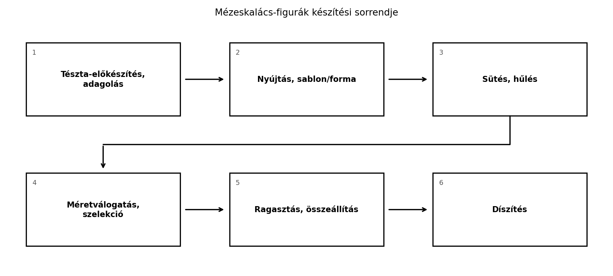

A mézeskalács-ajándék a kirakatban akkor lesz igazán eladható, ha a ház falai derékszögben illeszkednek, a báb orra nem reped le, a szív három emelete párhuzamos, és a huszár csákója egyenesen áll. Ehhez nem elég egyetlen jól bevált tésztarecept: a figurák készítése külön sablonokat, formázási fogásokat, méretarány-tervezést és összeállítási lépéseket igényel. A vevő elvárja, hogy a ház oldala ne törjön le a kicsomagoláskor; olyan terméket vár, amely áll, szép, szárazon csomagolható, és hetek múlva is megőrzi a mintáját.
Ebben az alfejezetben a leggyakoribb mézeskalács-figurákat készítjük el lépésről lépésre. A mézeskalácsház sablontervezését és cukorragasztásos összeállítását, a formába nyomott mézesbábot, a magyaros emeletes mézeskalács-szívet, valamint a huszár- és állatfigurákat. A hangsúly a méretpontosságon, a száritási időn és a biztonságos díszítési sorrenden van.
Képzeld el a munkapadot, amelyen négy különböző munkarend fut egymás mellett:
A közös tanulság: minden figura előbb részekből áll össze, a részeket méret szerint, tömeg szerint és páratartalom szerint kell vezetni, és a díszítés csak a teljes hűlés után kezdődhet.
Definíció. – mézeskalács-figura. Olyan mézes tésztából készült, formázott, sütött és díszített termék, amely emberi vagy állati alakot, tárgyat, épületet, szív vagy más jelképes formát ábrázol. A figurát készíthetjük negatív mintát adó ütőfával, kiszúróval, kézi sablonnal vagy szabadkézi vágással; jellemzője, hogy sütés után nem feltétlenül töltött, és többnyire cukormázzal, papírral, szárított gyümölccsel vagy maggal díszítik.
Szabály. – Figurák közös sütési elve. A figuratésztát mindig azonos vastagságra nyújtjuk, mert a vékony rész hamarabb megég, a vastag pedig nyers marad. Az apró, kiálló részek (orr, láb, csákó, fül) gyorsabban barnulnak; ezért a sütési hőmérsékletet 10–20 °C-kal alacsonyabbra vesszük, mint az egyszerű mézeskalácslapoknál, és a sütőlemezt figyeljük (ellenőrizendő: üzemi technológiai lap, tészta vastagsága). A sütésből kivett figurákat forrón nem mozgatjuk addig, amíg a felületük nem szilárdult, mert a forró tészta deformálódik.
Összefüggés. – Sablonos darabszám és felület. Ha egy mézeskalácsházhoz egy hosszú és magas homlokzatot, valamint széles oldalfalat tervezünk, a ház alaprajzi kerülete: . Nyeregtetős háznál (az oromzat a homlokzaton van, magassága a fal fölött ) két tetőtábla kell; egy tábla hossza a gerinc mentén , ahol az eresz túlnyúlása, szélessége pedig a tetősík ferde hossza plusz az eresz: . A homlokzat sablonja egy téglalap, rajta magas háromszög alakú oromzattal. A sablonok rajzolásakor minden méretet a sütés utáni zsugorodás figyelembevételével 1–3%-kal nagyobbra veszünk (szemléltető tanulási érték, a tészta receptjétől függ; ellenőrizendő: próbasütés).
A ház nem süthető egy darabból, mert a magas, összefüggő fal a sütőben elvetemedne. Ezért lapokat sütünk, majd cukorral ragasztjuk.
Cél. A tanuló önállóan kiszabja, megsüti, összeállítja és díszíti a mézeskalácsházat; formába nyomja a mézesbábot; elkészíti az emeletes szívet; valamint kiszabja és díszíti a huszár- és állatfigurákat.
Eszközök és anyagok. Kartonpapír sablonok (ház, huszár, állat), kézi sodrófa vagy nyújtógép, éles kés, kiszúrók (szív, kör, állatformák), ütőfa mézesbábhoz, sütőlemez, sütőpapír, tűzálló edény a karamellhez, cukormáz habzsák, ecset, magok (dió, mandula – diófélék, jelölendő allergén; mák – nem a 14 allergén egyike, de az összetevők között feltüntetendő), liszt a nyújtáshoz, frissen összegyúrt mézestészta. Az adagok szemléltető tanulási értékek, a receptúra az üzemi technológiai lapról jön.
Higiénia. Tiszta munkaruha, hajháló, ékszer nélkül; kézmosás a munka kezdetekor, nyersanyagváltáskor és a díszítés előtt. A mézesbáb ütőfát minden használat előtt forró vízzel, enyhe mosogatószerrel kell tisztítani, majd szárazra törölni; a fa repedéseibe ragadt tésztát naponta el kell távolítani, mert ott a mikrobák megtelepedhetnek.
Allergén. A mézes tészta jellemző allergénjei a búzaliszt (glutén), a tojás, a tej és a dióféle, ha a díszítéshez használsz. A dió/mandula/szezám díszítésű figurát elkülönítve kell tárolni, és a vevőnek jelölni a csomagoláson az 1169/2011/EU szerint. A cukormázba kerülő tojásfehérje allergén. Sütés utáni mázhoz és ragasztómázhoz csak pasztőrözött tojásfehérje vagy tojásfehérje-por használható; nyers héjas tojás fehérjéje hőkezelés nélkül tilos (ellenőrizendő: az üzemi technológiai lap és a HACCP-terv).
HACCP. Kritikus pont a cukormázas díszítésnél a tojásfehérje-tartalmú máz hőkezelt (pasztőrözött) volta, valamint a tojás- és tejtartalmú ragasztóréteg keresztszennyeződése és nedvessége. A töltelékes szívnél a hűtés nélkül tárolt, tejszínes vagy tojásos töltelék szaporodási kockázatot jelent. A határérték például a tárolási hőmérséklet és idő (ellenőrizendő: HACCP-terv). A díszítetlen mézeskalácsok alacsony vízaktivitású termékek, ezért mikrobiológiai kockázatuk kisebb; a megszáradt, pasztőrözött fehérjés mázzal díszített termék a technológiai lapon rögzített ideig tárolható (ellenőrizendő). A száradás a Salmonellát nem pusztítja el, ezért nyers fehérjéből készült mázat sem száradással, sem hűtéssel nem tehetünk biztonságossá.
Gépbiztonság. A nyújtógépet csak betanítás után, felügyelettel kezeled. Üzem előtt ellenőrizd a védőrácsot, a reteszelést és a vészleállítót. A hengerek közé működés közben soha nem nyúlunk; tésztát eltávolítani, tisztítani csak leállított, áramtalanított, újraindítás ellen biztosított gépen, a hengerek teljes megállása után szabad. A kést a pengével a testtől elfelé, csúszásmentes alátéten használd; a kézi sodrófás nyújtásnál a munkalap széle ne legyen éles. A forró karamell égési veszélyt jelent: kesztyűvel, hosszú szárú edénnyel dolgozz, és a karamellt ne kóstold közvetlenül az edényből.
A 2. lépésben említett ütőfás bábkészítés menetét az alábbi metszeti képsor mutatja: a faragott forma (1) lisztezése (2), a tészta betömése (3), simítása (4), a báb kiverése (5) és a kész, domború báb (6).
A 3. kocka vastagsága a forma mélységéhez igazodik: ha a tészta vékonyabb, mint a negatív minta, a báb részletei nem töltődnek ki (lásd a 3. feladatot). A kiveréskor szakadó báb tipikus oka a kihagyott lisztezés (2. kocka) vagy a túl száraz tészta. A HTML-kiadásban a képsor lépésenként nagyítható.
1. példa – Ház sablonméretezése (közepes).
Adott: homlokzat szélessége
,
oldalfal hossza
,
az oromzat magassága a fal fölött
,
a kívánt túlnyúlás
.
Keresett: egy tetőtábla mérete (nyeregtető, két
tábla).
Megoldás:
Ellenőrzés: két 11,0 ×
10,0 cm-es tábla kell; a gerinc mentén mindkét végén 1,5 cm, az eresznél
1,5 cm a túlnyúlás. Ha a tésztánk a próbasütésben 2%-ot zsugorodik, a
sablont a fenti méretek × 1,02-es szorzójával, azaz kb.
-re
rajzoljuk (ellenőrizendő: próbasütés). ∎
2. példa – Emeletes szív tömegelosztása
(közepes).
Adott: a kész emeletes szív tömege
,
a három szívlap tömegaránya
(alulról felfelé), a lekváros ragasztóréteg tömege
(a felületi díszítőmáz nem tartozik bele).
Keresett: az egyes szívlapok kész (sült) tömege, majd
feladási tömege.
Megoldás: A tészta összes kész tömege
Az arány szerint az egy osztásrészre
jutó tömeg:
tehát a lapok: alsó
,
középső
,
felső
.
Ellenőrzés:
,
hozzáadva a 30 g-nyi lekváros ragasztóréteget
.
A felületi díszítőmázat külön számoljuk; a fenti 300 g a díszítőmáz
nélküli tömeg. Feladási tömeg 8 % sütési veszteséggel
(tanulási példa,
):
,
,
(ellenőrizendő: az üzem mért sütési vesztesége). ∎
3. példa – Huszár felületének kiszabhatósága
(összetett).
Adott: a testtéglány 5 cm széles és 12 cm magas; a kar
6 cm; a csákó ellenzője 4 cm széles; a tészta nyújtott vastagsága 6
mm.
Keresett: hány db testet lehet kiszabni egy
-es
tésztalapból, ha a darabok között 1 cm hézagot hagyunk?
Megoldás: Hosszirányban (40 cm) 3 testmagasság fér el:
(a 4. már nem:
).
Szélességben (30 cm) 5 test fér el:
.
Összesen
test. A karokat és a csákókat külön tésztalapból szabjuk ki; a
sablonrendszert a sütőlemez méretére igazítjuk (ellenőrizendő:
sütőlemez mérete, tésztalap mérete). ∎
Előírás. A mézeskalács megnevezésű termékekre vonatkozó összetételi, jelölési és minőségi követelményeket a Magyar Élelmiszerkönyv vonatkozó előírása és irányelve, valamint a mézes készítményekre vonatkozó hazai szabályozás tartalmazza (ellenőrizendő: Codex Alimentarius Hungaricus és hatályos mézes előírások). A díszítőanyagokra és a felületi mintákra is alkalmazni kell az 1169/2011/EU rendelet allergénjelölési kötelezettségeit, továbbá a csomagoláson való fogyasztói tájékoztatást a csomagolt termékre. Az élelmiszerrel érintkező anyagok (sütőpapír, fólia, ütőfa, karton) csak az 1935/2004/EK rendeletnek megfelelő anyagúak lehetnek (ellenőrizendő: az 1935/2004/EK szerinti megfelelőségi nyilatkozat).
Hiba – repedt házfal. Egy tanuló a mézeskalácsház oldalát közvetlenül a sütőből kivett lapból ragasztotta. A lap még meleg volt, a karamell ráégett a forró felületre, de a hűlés során a tészta zsugorodott, és a homlokzati él mentén hajszálrepedés keletkezett. A kész ház ugyan állt, de a repedés a másnapi kiállításon tovább terjedt, és a tető alatt levált a fal. Ok: a lap hűlés közbeni zsugorodása és a karamell rugalmatlan varrata. Megelőzés: a lapokat teljesen lehűtve, 20–25 °C-on ragaszd; a karamell legyen sűrűn folyó, ne vizes; a ház alsó kerületét tedd kartonlapra, hogy ne a munkalaphoz tapadjon. Tanulság: a karamell ragasztó, nem hőszigetelő; a munkafolyamatok sorrendje – hűlés, válogatás, ragasztás, díszítés – felcserélhetetlen.
A mézeskalács-figurák minőségi jellemzői:
A kész darab sűrűsége a tésztájától függ, de a figurának száraznak, pormentesnek kell lennie, és a belsejében nem lehet nyers tészta. A vastagabb darabot sütés után azonnal szúrópróbával, hűlése után pedig félbevágott darab ellenőrzésével kell átsültség-vizsgálat alá vonni. A tömegtűrést a technológiai lap rögzíti (ellenőrizendő: üzemi minőségi terv).

Az ábra szerint a méretválogatás a ragasztás előtt kötelező, mert a deformált vagy repedt darabot ragasztás után már nem lehet javítani.
Az 1. kidolgozott példa házának hat sablonja az alábbi ábra bal oldalán látható kiterítve: két oromzatos homlokzat ( cm, falmagasság cm – példa, oromzat cm; az egyiken ajtó, a másikon ablak), két oldalfal () és két tetőtábla ( cm, szaggatott vonal: az eresz). A jobb oldal a sablonok elhelyezését mutatja egy 30 × 40 cm-es tésztalapon, 1 cm-es hézaggal.
A tetőtábla szélessége nem a ház alaprajzából, hanem a ferde tetősík hosszából adódik; ezért a magasabb oromzat szélesebb táblát kíván. A HTML-kiadás kalkulátorában a méretek, a zsugorodási ráhagyás és a tésztavastagság csúszkával állítható; az oldal kiszámolja a sablonméreteket, a szükséges tészta térfogatát és tömegét (ρ = 1,2 g/cm³, szemléltető érték), és hogy egy lapra hány elem fér.
Válaszok:
1. feladat (A). Sorold fel a mézeskalácsház összeállításának helyes sorrendjét a tészta kinyújtásától a díszítésig.
2. feladat (A). Mekkora az össztömege, ha egy mézeskalács-szív alsó lapja 135 g, középső 81 g, felső 54 g, a ragasztó 30 g? Mennyi a három lap aránya?
3. feladat (B). Egy mézesbáb ütőfa belső mélysége 8 mm. Kell-e vastagabbra nyújtani az 5 mm-es tésztát, ha a báb szélessége 4 cm, magassága 12 cm? Indokold.
4. feladat (B). Egy mézeskalácsház tetőtáblája 11 × 10 cm-es. Hány ilyen tábla fér ki 30 × 40 cm-es tésztalapból, ha darabonként 1 cm hézagot hagysz?
5. feladat (C). Egy tanuló a ház homlokzatát sütés közben megfigyelve a sütő hőmérsékletét 180-ról 200 °C-ra emeli, mert a széle nem barnul eléggé. A tető füstölni kezd. Mi a hiba? Mit kellett volna tennie?
6. feladat (D). A huszár csákóját 6 mm vastagnak nyújtották, a testet 4 mm-nek. A csákó a sütés során elhajlik. Keress legalább két okot, és javasolj megoldást.
1. feladat megoldása. Kinyújtás → sablon szerinti kiszabás → hűtött pihentetés → sütés → lelapolás → teljes hűlés → méretválogatás → karamell ragasztás → díszítés. A sorrend a zsugorodás és a karamellkötés miatt kötött.
2. feladat megoldása. Össztömeg: . A lapok aránya , egyszerűsítve 27-tel osztva . A ragasztó nem része a tésztalapok arányának.
3. feladat megoldása. Az ütőfa mélysége 8 mm, tehát ha 5 mm-es tésztát nyomsz a formába, a forma nem tölti ki teljesen, ezért a báb hátoldala egyenetlen lesz, az orr, a fülek nem emelkednek ki. A tésztát legalább 8–10 mm vastagra kell nyújtani, és a felesleget le kell vágni. Ha a tészta túl vastag, a közepén nem sül át; ezért az adott forma mélységéhez igazodva kell próbadarabot sütni.
4. feladat megoldása. A tésztalap hossza 40 cm, a tábla hossza 11 cm. Egy sorban darab fér. A lap szélessége 30 cm, a tábla szélessége 10 cm, tehát sor. Összesen tábla, azaz három ház teteje. A maradék helyen (kb. 4 × 30 cm és 8 × 36 cm-es csík) kisebb elemek, pl. kémény, ablakdísz kiszabhatók.
5. feladat megoldása. A hiba a hőmérséklet emelése: a mézeskalácsban lévő cukor és méz 180 °C fölött gyorsabban karamellizálódik, a vékony szélek égnek, a vastag középső még nyers marad. A megfigyelés, hogy a széle nem barnul, nem a hőmérséklet hiánya, hanem a tészta cukor- és nedvességtartalma, a túl rövid sütési idő miatt volt (a mézes tészta sütésénél gőzölést nem alkalmazunk). A tanulónak először a sütési időt kellett volna meghosszabbítani, a lemezt sütőpapírra tenni, vagy a sütőt 160–170 °C-on tartani, és a sütőablakon át figyelni a felület száradását.
6. feladat megoldása. Lehetséges okok: (1) a csákó (6 mm) vastagabb volt a testnél (4 mm), így a vékonyabb test hamarabb átsült, a csákó nehéz és nyers maradt, és lehajolt; (2) a csákó súlypontja a test fölött volt, és a tészta sütés közben megpuhult; (3) a lemez nem volt sík, a csákó felfekvése egyenetlen. Ok: a csákó és a test eltérő vastagsága (egyenetlen sülés; a vastagabb, nehezebb csákó a puha testen elhajlik), valamint a lemez egyenetlensége. Megoldás: a csákót és a testet azonos (pl. 5–6 mm) vastagságra nyújtani, a csákót sütés közben a lemezen alátámasztani, illetve fekve sütni, a lemezt szintezni, alacsonyabb hőfokon sütni.
A mézeskalács-figurák – ház, báb, szív és huszár – készítése méretarányos sablonokkal, formával, rétegragasztással és díszítéssel történik. A ház lapjait külön-külön sütjük, teljes hűlés után karamellragasztással állítjuk össze; a tetőtábla az eresz túlnyúlása miatt hosszabb és szélesebb a falaknál. A bábot ütőfával, a forma mélységénél vastagabb tésztából készítjük, mert a vékony tészta nem tölti ki a formát. Az emeletes szív lapjait tömegarányban rétegezzük, a ragasztóanyagot külön kell számolni; a 300 g-os szív 5:3:2 arányú lapjai 135, 81 és 54 g tömegűek, a ragasztó 30 g. A huszár és állatfigurák kiálló részeit vastagabbra hagyjuk, alátámasztjuk, és alacsonyabb hőfokon sütjük, hogy ne törjenek. A díszítés előtt minden darabot méret szerint válogatunk, a repedt házfalat nem ragasztjuk. A tojásos máz esetén pasztőrözött alapanyagot használunk; a diófélékkel díszített figurákat allergénként jelöljük. Erre a méret- és szárítási rendre a következő Mézeskalács csomagolása, tárolása, minőségvizsgálata és hibái alfejezet épít, mert a csomagolás során is az állékonyságot és az allergén-elkülönítést kell fenntartani.
Források típusai.
- Magyar Élelmiszerkönyv mézes készítményekre vonatkozó előírásai
(ellenőrizendő: pontos előírásszám és hatályos szöveg).
- 1169/2011/EU rendelet allergén- és fogyasztói tájékoztatási
követelményei (ellenőrizendő: a mézeskalács díszítőanyagokra és a
csomagolt termékre vonatkozó jelölési gyakorlat).
- 1935/2004/EK rendelet az élelmiszerrel érintkező anyagokról
(ellenőrizendő: a sütőpapír, karton, fa ütőfa és díszítőeszközök
megfelelősége).
- NÉBIH útmutatók a mézeskalácsos üzemek jó higiéniai gyakorlatáról
(ellenőrizendő: a tojásos máz és a hűtés nélküli tárolás kockázataira
vonatkozó állásfoglalás).
- Üzemi technológiai lap, sütőpróba, HACCP-terv (ellenőrizendő: sütési
hőmérséklet, idő, a 2%-os zsugorodás, a ragasztóanyag összetétele, a
tömegtűrés).